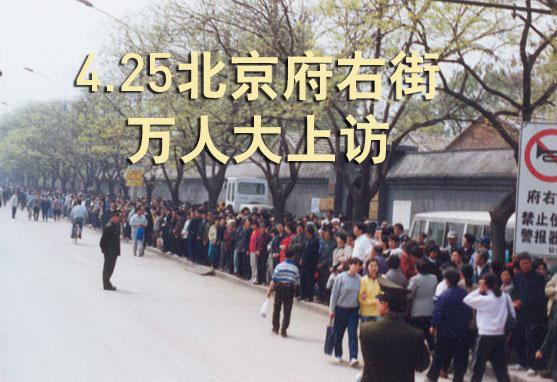
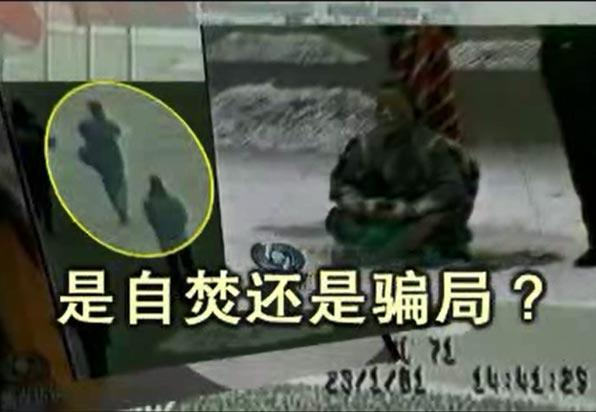
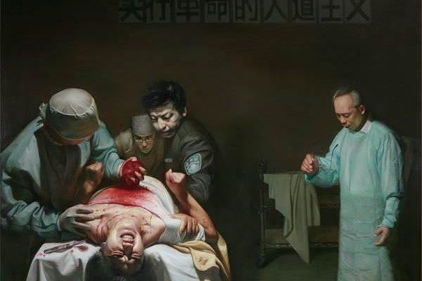
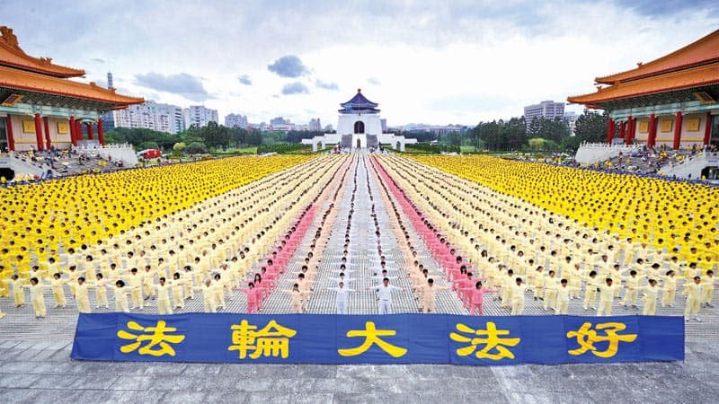

法轮大法 简介
法轮大法也称法轮功，是由李洪志先生于一九九二年五月传出的佛家上乘修炼大法，以宇宙最高特性“真善忍”为根本指导，按照宇宙演化原理而修炼。经亿万人的修炼实践证明，李洪志先生所传的法轮大法是大法大道，在把真正修炼的人带到高层次的同时，对稳定社会、提高人们的身体素质和道德水准，也起到了不可估量的正面作用。
|
法轮大法好在哪？ 中共迫害法轮功已经整整十七年，面对中共疯狂地迫害，法轮大法修炼者们仍坚修大法，并顶着巨大压力、冒着巨大危险、忍受着巨大痛苦持之以恒地向世人讲述法轮大法好的真相。那么法轮大法到底好在哪里呢？ |
|
法轮功（法轮大法）简介及有关问答 一、法轮功（法轮大法）简介 |
|

“四•二五”上访真相 一九九九年四月二十五日，逾万名法轮功学员到北京的国务院信访办公室上访，要求当局释放此前在天津被当地警察暴力抓捕的四十五名法轮功学员，同时要求当局允许法轮功的书籍合法出版，并给予法轮功修炼民众一个合法的炼功环境。 |
|

“天安门自焚”真相 2001年1月23日（除夕）下午，天安门广场“突发”5 人自焚事件。 事发仅 2 小时，新华社以超乎寻常的速度向全世界发出英语新闻，声称“自焚者是五名法轮功学员”。但是，美国之音记者打电话向北京公安局和公安部查证，答复竟然是不知道有这回事。喉舌的宣传口径竟然抢到了公安调查的前面！ |
|
“1400例”真相 一九九九年七月二十日，中共江泽民集团发动了对法轮功的迫害。如同中共历次政治运动一样，这场迫害也是以铺天盖地的谎言宣传开道，所谓的“1400例”就是谎言宣传的一部份。 |
|

中共活体摘取法轮功学员器官 自二零零六年三月以来，中共活体摘取法轮功学员器官牟取暴利的黑幕在国际上被撕开。这场由中共前党魁江泽民下令进行的，由中共政府、军队统一管理，从监狱、法院、医院形成一条龙的秘密大屠杀，是对全人类的犯罪，是人类前所未有的罪恶，冲击着每一个人的良知，挑战着每一个人的道德底线。 |
|
起诉江泽民 一九九九年七月二十日，前中共头目江泽民悍然发动了对法轮功的迫害，这场反人类的暴行一直延续到今年，已经持续了十六年。法轮功学员诉江，不仅是作为受害者讨还公道，也是在匡扶社会正义，维护所有中国人的做好人的权利。希望社会各界都来声援和加入这场诉江大潮。 |
|

法轮大法 弘传世界 今天，法轮大法弘传全球一百多个国家和地区，修炼者遍布亚洲、欧洲、非洲、北美洲、南美洲和大洋洲。由于法轮功为人类社会带来的贡献，李洪志先生和法轮大法迄今获得各种褒奖达三千多项。李洪志先生所著《转法轮》已经被翻译成40种语言。 |
主页 我要三退